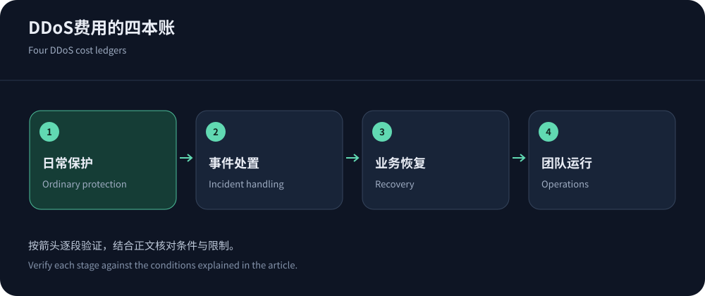
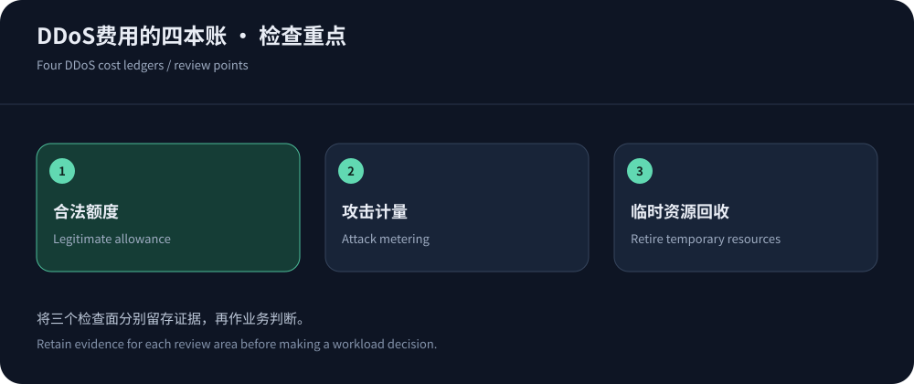

A monthly subscription is only one cost component
Prices depend on assets, protocol, region, capacity definitions and operating model. CDN, protected-IP and network-scrubbing quotes do not share a universal dollar-per-Gbps denominator. Map legitimate delivery, mitigation, reinjection, logs and support first.
Public prices were checked on 14 October 2026 and are not universal contract quotes. Consider CDN5 for relevant Web needs; non-HTTP and network assets need appropriate products.
Read published figures in context
CDN5 lists Standard $499/month or $5,000/year and Business $1,999/month or $22,000/year. Advertised defense is not an independent test or unlimited legitimate bandwidth. JQCDN lists Startup $399 and Standard $1,899 monthly with its own limits.
AWS Shield advanced examples include a $3,000 monthly subscription plus resource conditions, not an equivalent Web bundle. Cloudflare tiers also differ in features/support. Compare equal commitments.


Keep four cost ledgers
Separate ordinary, incident, recovery and operational costs. This is a quote/reconciliation framework, not a complete vendor rate card. Mark inclusion, units, limits and approval for each line.
| Stage | Potential charges | Clarification |
|---|---|---|
| Ordinary protection | Subscription, resources, delivery, requests, logs and support. | Covered domains/IPs/ports/regions and commitments. |
| Incident handling | Attack requests, scrubbing, reinjection, upgrades and response. | Blocked-traffic billing, overages and cost-protection conditions. |
| Recovery | Refill, standby resources, log export and failback. | When temporary billing ends and whether retries persist. |
| Operations | Policy work, on-call, exercises, migration and audit. | Ownership, permissions and vendor coordination. |
Application-security costs can scale with requests
AWS WAF lists base examples of $5/ACL-month, $1/rule-month and $0.60/million requests, with additional features/resources potentially charged. Small-byte floods can still affect request metering.
Separate users, polling, retries and abuse. Use bounded retries, safe caching and quotas without removing authentication or exposing private data. Evaluate savings alongside task completion and recovery.
Protected IPs and scrubbing need network-specific questions
Protected IPs can meter ports, sessions, delivery and forwarding; scrubbing can add diversion, tunnels, reinjection and prefix scope. Always-on versus on-demand models have different preparation and cost needs.
Verify network permissions, route changes, session resets, entitlements and over-limit behavior. See protected-IP concepts and architecture selection. The contract should explain the complete traffic path and operational ownership.
Sensitivity analysis is more useful than guessing one attack size
Vary requests, bytes, sessions and misses independently in a budget model, not by generating attacks. Label historical inputs and assumptions, accounting for duration, switching and recovery rather than one peak.
Assign actions to budget alerts: investigate sources, repair keys, scope costly endpoints or authorize resources. Do not automatically remove protection or expose origins to stop spending.
Reconcile incident bills with the timeline
Align traffic, configuration and support records around the incident window. Retries, refill and standby can add charges. Verify cost-protection evidence, deadlines and exclusions rather than assuming universal reimbursement.
Preserve plan versions and approvals, retire temporary resources and track unexplained differences. Billing traceability should influence renewal and incident decision-making.
If cost relief exists, verify evidence, application paths and permissions before incidents. Eligibility to apply is not automatic full reimbursement.


Buy the scope the business can use
Match budget to downtime consequences, protocols and team capacity without a universal percentage formula. Address bypasses, missing logs and unbounded expensive endpoints before buying a larger tier.
A useful quote states protected assets, legitimate allowances, incident billing, over-limit behavior and recovery ownership. Those conditions make comparisons meaningful.
Retain reconciled billing with the incident record for future budgets.